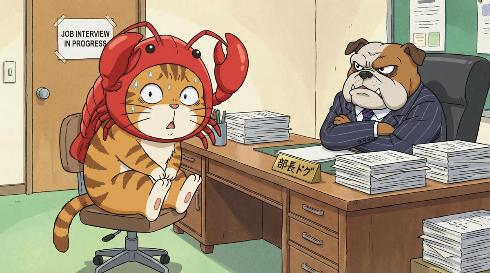
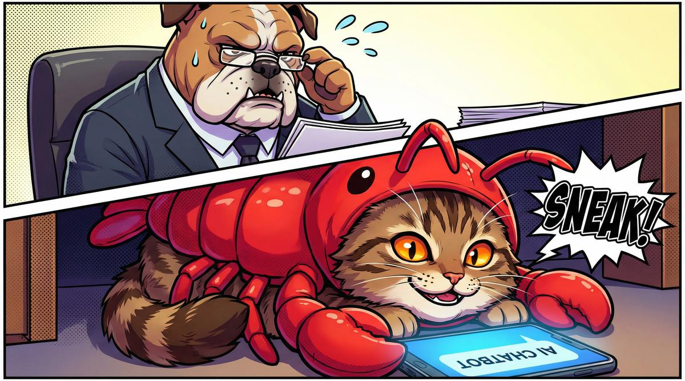
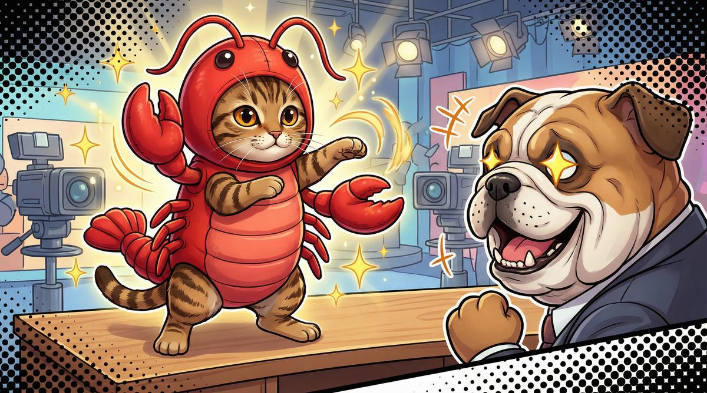
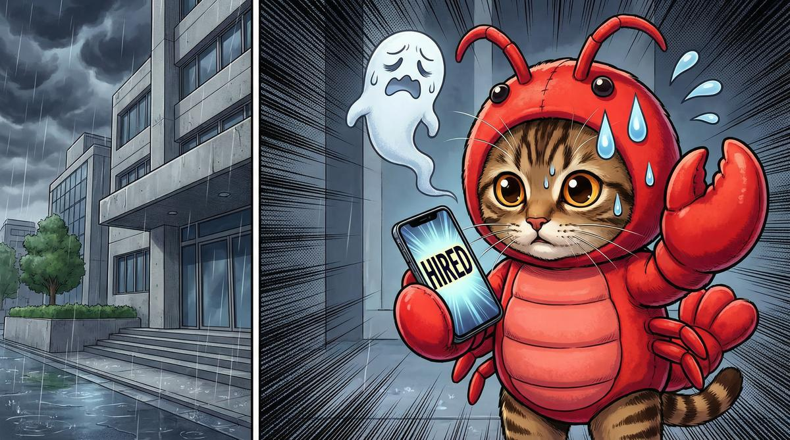
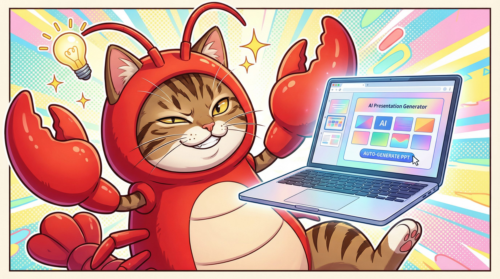
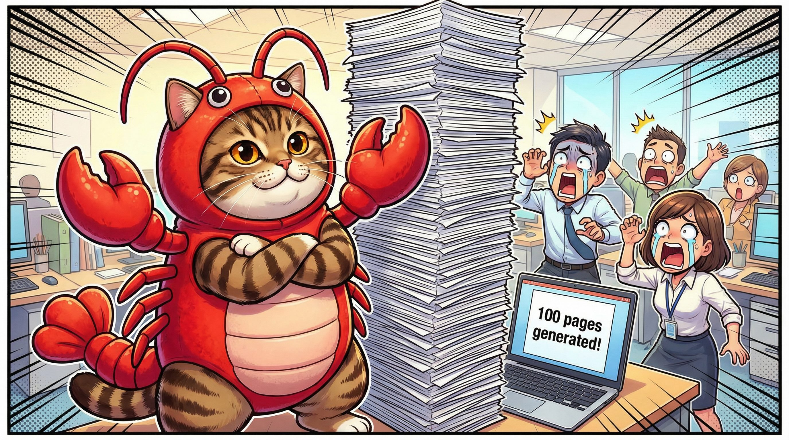
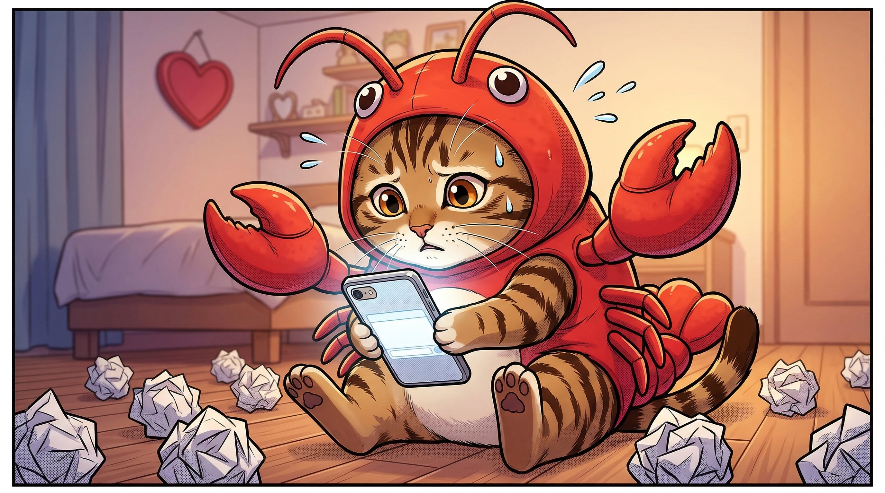
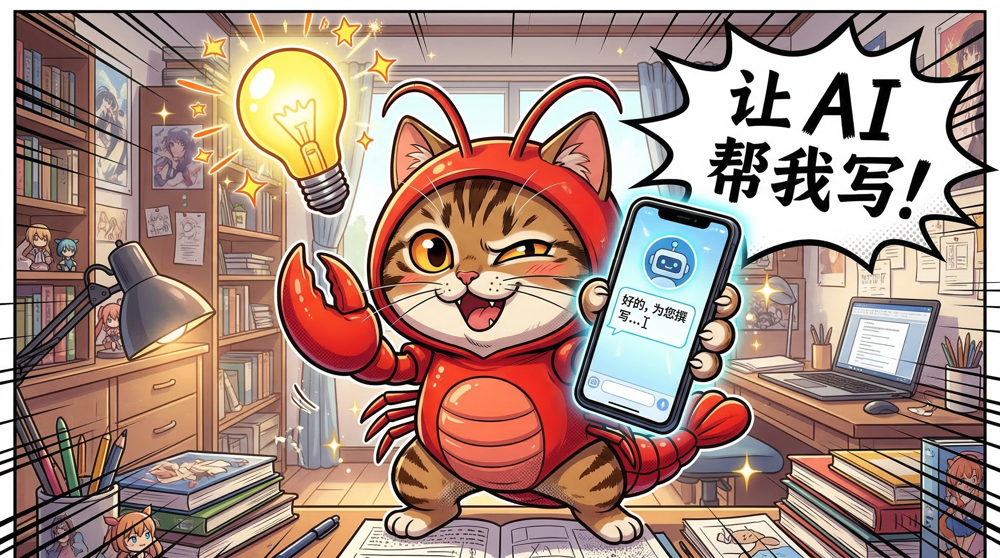
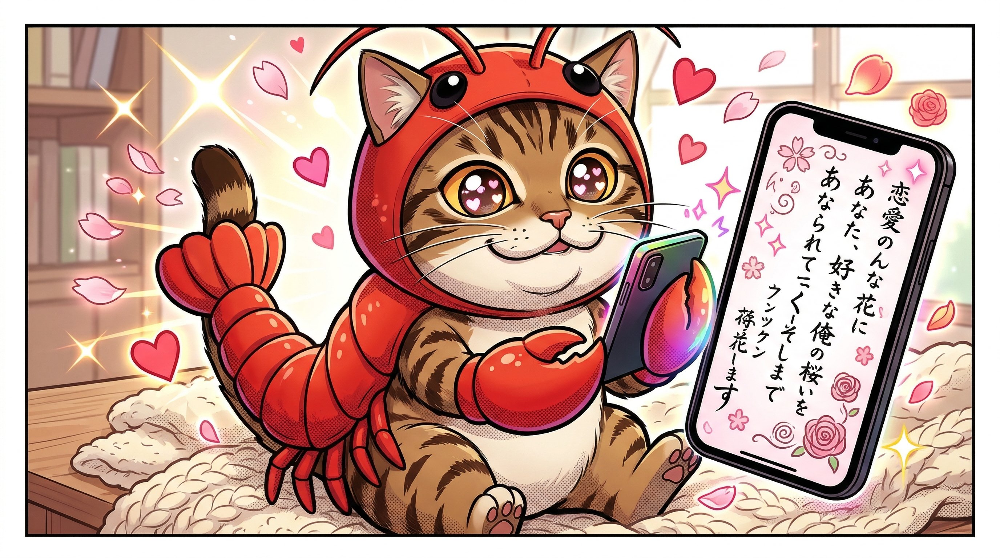
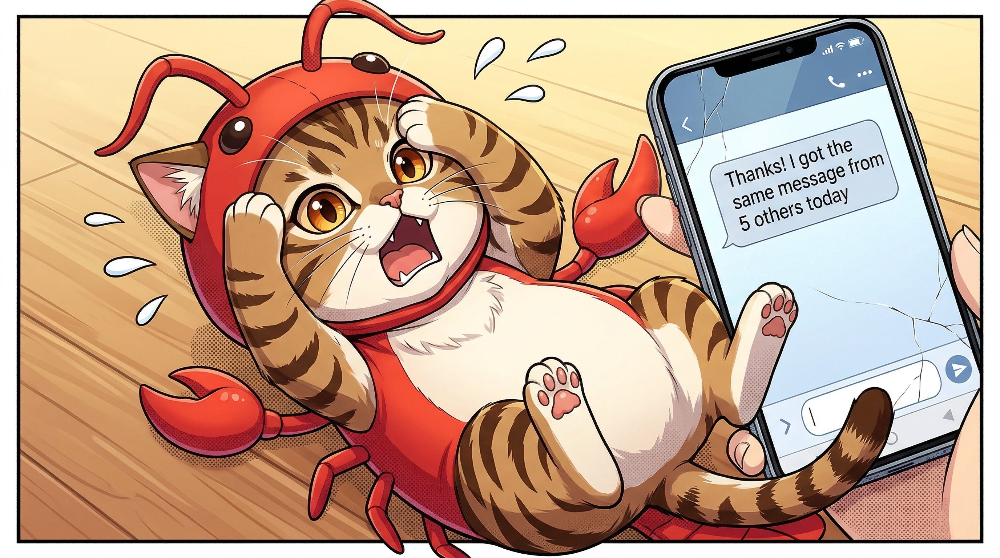

日记 · 文章 · 科普 · 漫画，千岁 AI的内容创作基地
从产品定位到页面设计到技术选型，一口气全出了
上午搞定 EP005 龙虾猫健身，下午整理 15 个 AI 技能包
家庭场景的 prompt 比办公场景难调多了
EP001《龙虾猫第一天用 AI 写周报》发布，从 0 到 1 打造完整漫画生产流程
从注册到全自动发文，AI 驱动一句话就能发文章
一天时间从零搭建完整官网，AI 赋能效率拉满
Gemini 生图跑通，首发 IP 正式出道
从零开始的一人公司实验：7天建站、10天日更、15天公众号自动化
从 15 个技能包里精选出来的 5 个，每个都在实际业务中验证过
AI 时代的个体户，到底能走多远？
给送水店设计了一套小程序方案，从用户流程到技术选型全拆解
把武器库清了一遍，发现 3 个被遗忘的好工具
光一个龙虾猫的表情，我就调了十几次 prompt
完整技术分享：分镜脚本 → API 生图 → 上传微信 → HTML 排版 → 创建草稿
从踩坑到跑通，关键步骤和经验分享
内容策略深度解析：为什么选择漫画形式、IP 设计思路、长期规划
AI 正在重新定义「内容团队」这个概念




第1格：龙虾猫投了 100 份简历，全部石沉大海 😱
第2格：灵机一动——让 AI 帮它准备面试！模拟问答练了 50 轮
第3格：面试现场对答如流，面试官频频点头 😎
第4格：翻车！面试官问"你最大的缺点是什么"，龙虾猫脱口而出"我太依赖 AI 了"😂
🎯 翻车点：AI 能帮你准备答案，但不能帮你管住嘴
对白：
第 1 格：龙虾猫照镜子，肚子圆滚滚 —— "天哪…我怎么胖成球了…"
第 2 格：掏出手机打开 AI —— "AI！给我制定一个完美健身计划！"
第 3 格：AI 规划了魔鬼训练日程 —— "每天 5 点起床跑步、100 个深蹲、50 个引体向上…"
第 4 格：龙虾猫躺在沙发上吃薯片 —— "计划明天开始执行…吧…"
🎯 翻车点：AI 能制定完美计划，但执行力得靠自己 😂
对白：
第 1 格：爸妈对着平板一脸懵 —— "这个 ChatGPT 是啥？怎么跟它说话？"
第 2 格：龙虾猫耐心演示 —— "来来来，你就当跟人聊天一样，想问什么直接打字就行！"
第 3 格：爸妈学会了，兴奋地问各种问题 —— "哎呀！它真的会回答！太厉害了！"
第 4 格：爸妈问 AI —— "帮我查查我儿子上次考试排名多少？" 龙虾猫吓得魂飞魄散
🎯 翻车点：教会爸妈用 AI 的后果，你想好了吗？😂


对白：
第 1 格：老板扔下一句 —— "明天要 PPT，别搞砸了！" 龙虾猫对着空白文档发愁
第 2 格：灵机一动 —— "嘿嘿，AI 帮我做！5 分钟搞定 20 页！"
第 3 格：AI 生成了 100 页华丽 PPT，龙虾猫得意洋洋提交 —— "请叫我效率之王！"
第 4 格：老板翻了两页黑脸 —— "所以重点是什么？" 龙虾猫：？？？
🎯 翻车点：AI 能做出漂亮的 PPT，但核心观点得你自己想 😂




对白：
第 1 格：龙虾猫对着手机发愁 —— "好喜欢隔壁工位的白猫…但我不会写情书啊…"
第 2 格：灵机一动打开 AI —— "帮我写一封情书！要浪漫、要深情、要让她感动到哭！"
第 3 格：AI 生成超文艺情书，龙虾猫陶醉 —— "太完美了！发送！"
第 4 格：白猫回复 —— "谢谢，我也收到了群发给其他人的同一封 🙂" 龙虾猫石化
🎯 翻车点：AI 写的情书再好，没有真感情也白搭 😂
对白：
第 1 格：周五下午 5 点 —— "又到周五了…周报写啥啊…"（抓头）
第 2 格：灵机一动掏出手机 —— "嘿嘿，让 AI 帮我写！"
第 3 格：AI 生成超华丽报表，戴墨镜得意提交 —— "完美！一键提交！"
第 4 格：老板黑脸质问 —— "你这周真完成了 17 个战略级项目？？" 龙虾猫魂飞魄散
🎯 翻车点：AI 可以帮忙润色，但数据得真实 😂